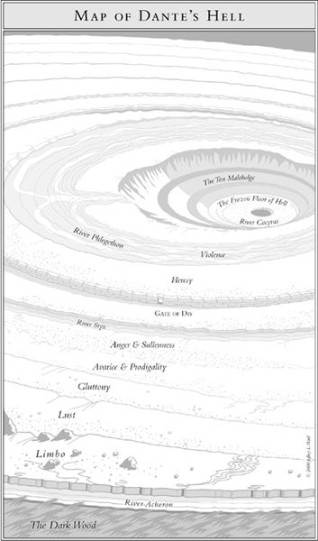
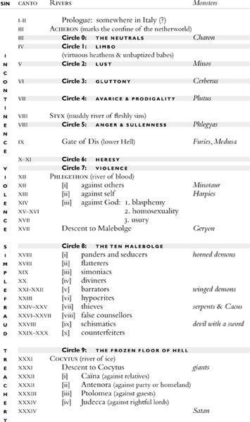
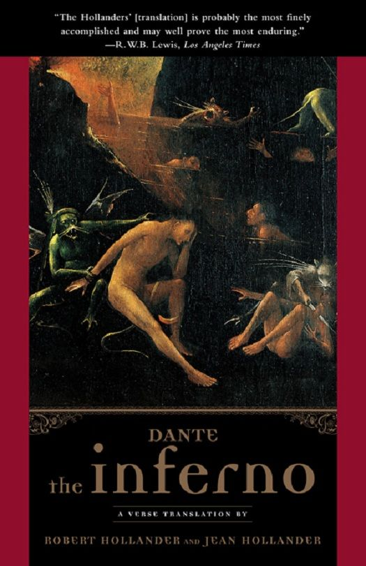

CANTO I
INFERNO I — Selva Oscura e il Colle
Struttura narrativa e Passaggi del Canto (Clicca per saltare ai versi)
Ogni passaggio include parafrasi e spiegazione in italiano e ingleseVoragine Infernale Interattiva (Ordinamento Morale — Inferno XI)
Tavole Originali dal Volume (Clicca per ingrandire)

Tavola I — Struttura Generale dell'Inferno
Tavola II — Malebolge e Lago di Cocito
Copertina — Hieronymus Bosch